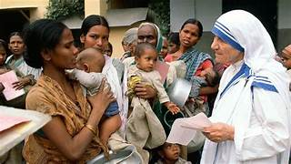
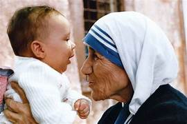
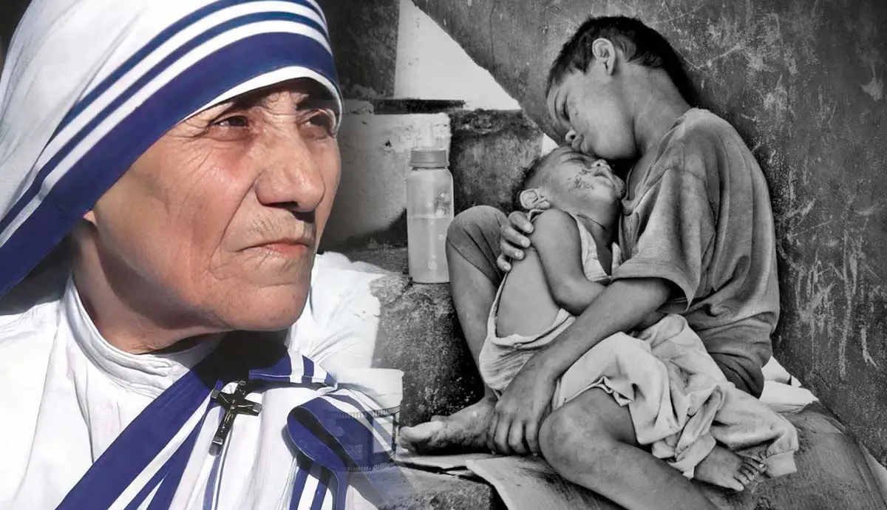
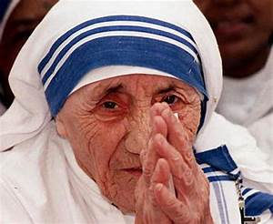
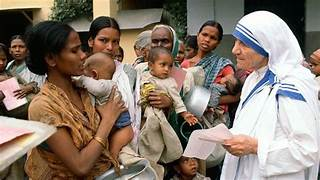
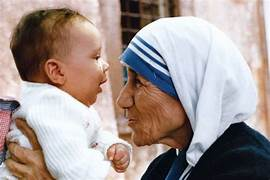
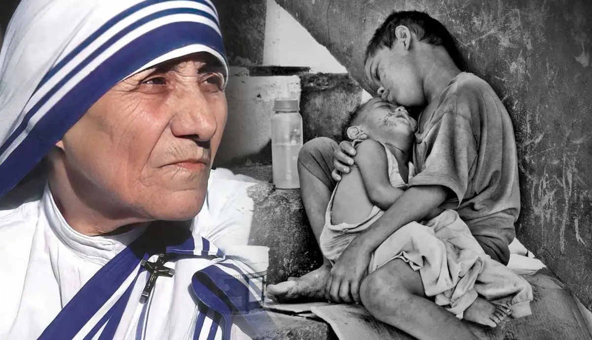
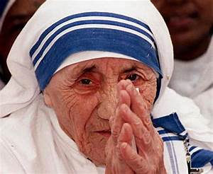

Mother Teresa
 







DO IT ALONE
PERSON TO PERSON."
Biography
Mother Teresa was a Roman Catholic nun and founder of the Order of the Missionaries of Charity, an organization that serves the poorest of the world’s population. An ethnic Albanian, born in what is now Macedonia, she lived and worked in India for nearly seven decades and became a citizen of that country. Her dedication to helping the poorest and sickest communities in Kolkata (then Calcutta) earned Mother Teresa widespread fame and numerous honors, including the 1979 Nobel Peace Prize.
EARLY LIFE
Mother Teresa was born Agnes Gonxha Bojaxhiu on August 26, 1910, in what is now Skopje, North Macedonia; at the time it was part of the Ottoman Empire. Her family was of Albanian descent; her father, a reasonably successful merchant, died when she was just eight years old. After his death, the family struggled financially, but her mother instilled in young Agnes the importance of leading a Christian life and serving the less fortunate. At the age of 12, Agnes first felt a calling to become a nun and devote her life to God. She left home at the age of 18 and joined the Sisters of Loreto, an Irish Catholic order with missions in India. She received training near Dublin, where she began learning English, before traveling to Kolkata (then known as Calcutta), India in late 1928. She took her first vows as a nun in May 1931, and received a new name: Teresa, after Saint Thérèse of Lisieux. In 1937, when she took her final vows, she became known as Mother Teresa.
The Order of the Missionaries of Charity
In 1950, Mother Teresa received permission from the Holy See to found her own order, the Missionaries of Charity. The order’s purpose was to help the poor while living among them, sharing their experience and treating them with kindness, compassion and empathy, but never pity. Mother Teresa and those who joined her order built various facilities as an open-air school, housing for orphan children, nursing homes for lepers and hospices for terminally ill patients.
Mother Teresa’s order expanded over the years to serve communities outside Kolkata, and in 1965, received permission from Pope Paul VI to expand internationally. It opened its first center in the United States in 1971 in New York City, and would eventually reach around 90 countries.
Nobel Peace Prize
In 1979, Mother Teresa was awarded the Nobel Peace Prize for what the prize committee cited as her “work undertaken in the struggle to overcome poverty and distress in the world, which also constitute a threat to peace.” By that time, the Missionaries of Charity included more than 1,800 nuns and 120,000 lay workers, working in more than 80 centers in India and more than 100 other centers internationally. The following year, the Indian government awarded Mother Teresa the Bharat Ratna, the country’s highest civilian honor.
Declining Health and Death
After suffering a heart attack in 1989, Mother Teresa attempted to resign as head of the Missionaries of Charity but was returned to that office by a nearly unanimous vote; hers was the only dissent. In 1997, her worsening health forced her permanent retirement, and the order chose an Indian-born nun, Sister Nirmala, to replace her. Mother Teresa suffered cardiac arrest and died on September 5, 1997, in Kolkata, just days after her 87th birthday.
❤ Built with Love and Compassion by Subhashree Mohanty ❤.